Aviso de spoilers. Aqui você encontra o caminho pela campanha, as soluções dos enigmas que bloqueiam a passagem e as rotas para Leave, Rest ou Live. Os nomes em inglês, entre parênteses, ajudam a identificar placas, salas e itens. As imagens vêm da gameplay do Bora de Play.
Como usar este detonado
Primeira partida. Siga os capítulos numerados. Em cada área, use o quadro de passagem para localizar a saída e conferir o resultado antes de continuar. Na primeira visita a um telefone, experimente salvar e confirme o registro da partida antes de sair. Quando abrir um atalho, veja no mapa que áreas ele conecta. Guarde os itens de final que pretende usar nas caixas de armazenamento.
Já está jogando? Procure na tabela o ponto em que você travou e pule direto para a solução. Quando for preciso voltar para buscar um item, o capítulo avisa.
| Onde travei | Ir para |
|---|---|
| Frigorífico ou portão do motel | Chave da recepção |
| Porta das palmeiras ou acesso à balsa | Maçaneta e balsa |
| Carro em chamas bloqueando a estação | Desvio pelo túnel |
| Código da delegacia ou pochete do posto | Posto e túnel de Riverside |
| Cofre da xerife ou código 3100 | Cofre, evidências e projetor |
| Interfone, fichas ou quarto 4B | Union Apartments |
| Funerária, caixão ou cubos da igreja | Church Hill |
| Máscaras das estátuas | Onde achar as três máscaras |
| Válvulas dos esgotos, sinos ou fusíveis | Esgotos e montanha |
| Cabos, fitas ou lentes | Painéis de Thelend |
| Telefone de símbolos ou árvore | Telefone e estacas |
| Escolha de Eddie, anéis ou mementos | Os três finais |
Rota da campanha
- Começo e motel
- Centro e estação
- Riverside e delegacia
- Union Apartments
- Church Hill
- Prefeitura e Loomis Park
- Esgotos e montanha
- Thelend e porta vermelha
- Os três finais
1. Começo e motel
| De onde saio | Referência | O que faço | Como sei que funcionou |
|---|---|---|---|
| Mesa do Miner Diner | Cozinha com rádio | Recolha a chave no suporte e use-a na porta da lanchonete. | A saída para o telefone e o carro abre. |
| Frente do motel | Farmácia e portão da passagem subterrânea | Pegue a chave na área de funcionários, volte à rua inferior e abra o portão. | Você alcança a cerca com abertura para passar agachado. |
| Frigorífico | Sala no fundo, depois das peças de carne | Digite 2311 e atravesse para buscar a chave. | A Chave da Recepção aparece no inventário. |
| Recepção | Tecido à direita e escrivaninha | Corte o tecido e abra o compartimento com a chave. | O registro mostra a ficha de Eddie e o número para o teclado. |
| Porão da loja de presentes | Quadro elétrico perto do salão | Instale o fusível e ligue o salão. Complete o estande de tiro. | O prêmio é a chave da piscina. |
| Vestiário da piscina | Casaco pendurado | Recolha o cartão para abrir a suíte Grizzly. | A porta da suíte libera acesso à rede da piscina. |
| Piscina | Escada próxima ao quarto 1 e cano | Pesque o objeto e combine-o com a solução de limpeza. | O inventário mostra a maçaneta para a porta das palmeiras. |
| Cenário do bar | Folheto do teleférico | Recolha a chave da balsa. Saia do motel e atravesse o túnel. | A chave abre o escritório onde você chama a balsa. |
Objetivo: descobrir o número de hóspede de Eddie e chegar à balsa.
No Miner Diner, pegue a chave do carro na mesa, a chave da lanchonete na cozinha e, se pretende fazer Rest, a caixa de anéis trancada no banheiro. A nota de emergência dá a frequência 89,0. Saia, atenda ao telefone e abra o porta-malas para recolher o material da investigação. Pegue o mapa no quadro de avisos e siga para o Crimson Bear Motel.
Antes de sair do Miner Diner
- Mesa e cozinha. A chave do carro serve para o porta-malas. Para abrir a porta da lanchonete, pegue a outra chave no suporte acima do rádio da cozinha.
- Banheiro. A caixa de anéis ocupa espaço, mas pode ficar guardada até você reunir as estrelas. Fotografe a nota da frequência para consultar depois.
- Na rua. O quadro com o mapa fica depois do carro. Suba pela estrada perto dele e atravesse o túnel até ver a placa do motel. O escritório fica à esquerda do portão.
A chave da recepção
- Leia o bilhete no escritório ao lado do portão. Ele aponta para a mercearia do Rodney.
- Pegue a chave da passagem subterrânea na área de funcionários da farmácia. Abra a passagem, passe agachado pela abertura na cerca e siga até a mercearia.
- Na loja, o bilhete manda juntar 23 ao dia do mês. O calendário indica 11. Digite 2311 no frigorífico, atravesse até a sala do fundo e pegue a chave da recepção. Esteja pronto para sair quando a criatura aparecer.
- Na volta, recolha o estilete e use-o nos tecidos que bloqueiam a passagem. No escritório do motel, corte o tecido da direita para alcançar a escrivaninha. Use a chave, leia a ficha de Eddie Velvet e copie o número de hóspede. Digite esse número no portão.
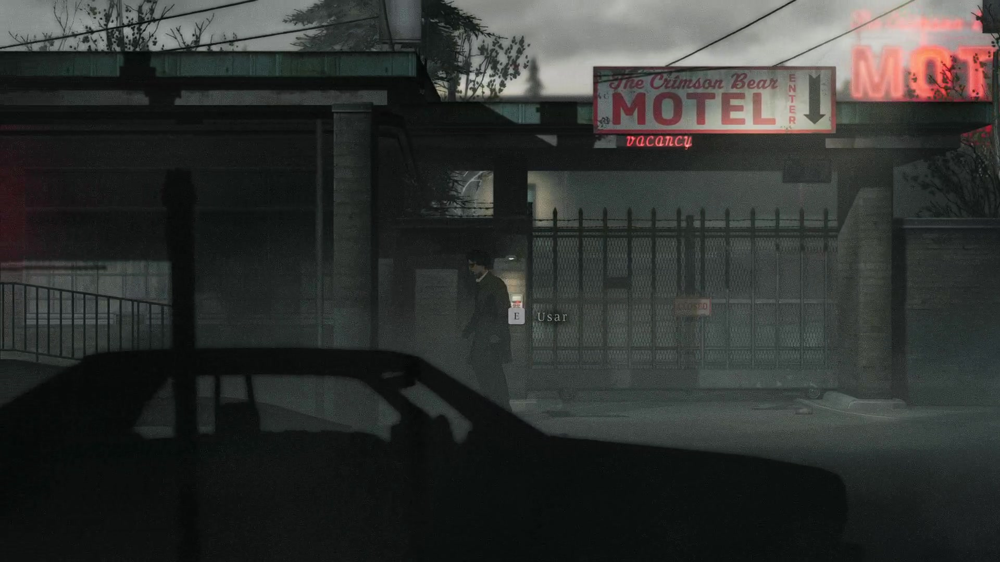
Entrada do Crimson Bear. O teclado fica junto ao portão, sob a placa do motel.
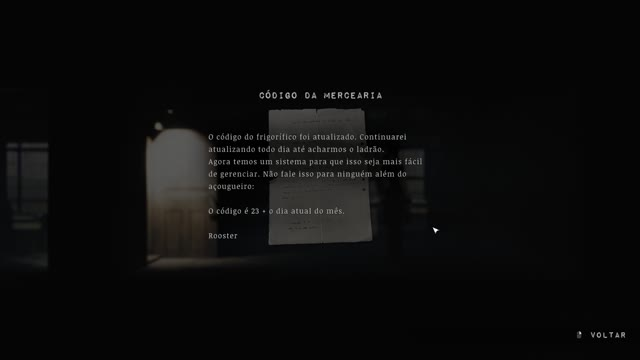
Bilhete na parede da sala à direita da mercearia. A regra está na última linha.
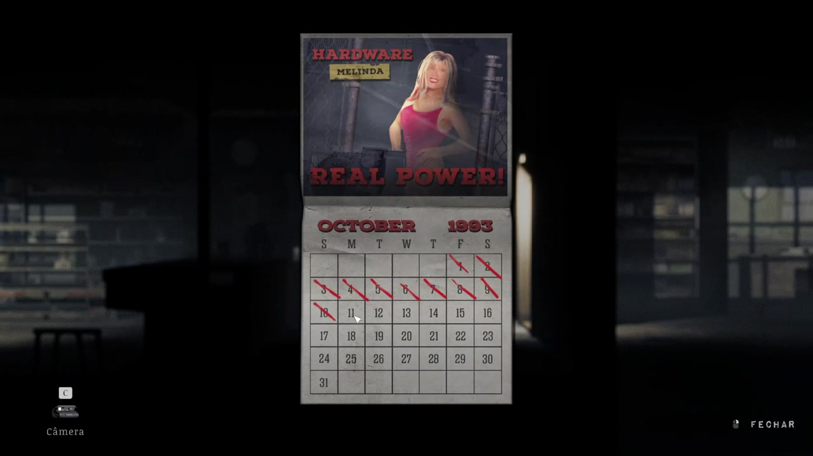
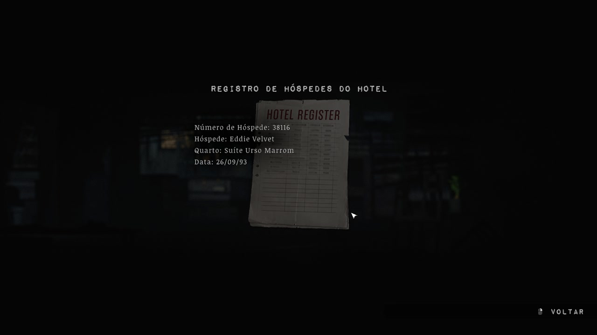
Na nossa gameplay, o registro mostrava 38116. Confira o número na ficha da sua partida: ele pode ser diferente.
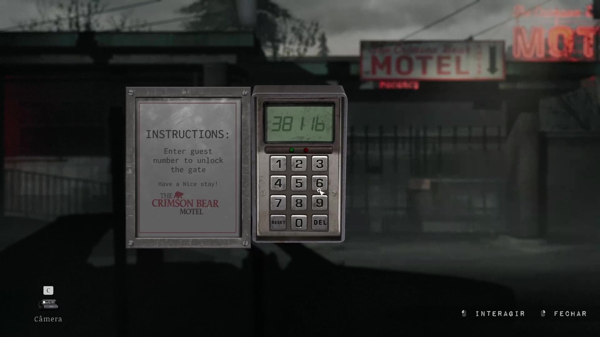
O teclado pede o número de hóspede que aparece no registro da sua partida. Se a volta da mercearia parecer bloqueada: procure o tecido branco no túnel e corte com o estilete. Entre na passagem escura antes da porta seguinte, alcance a borda e suba a escada. O outro tecido devolve você ao caminho da passagem subterrânea. Na recepção, o tecido à direita leva aos fundos. A chave abre o compartimento do registro nessa sala.
A porta com palmeiras
Pegue o fusível no porão da loja de presentes e instale-o no quadro do motel. Ligue o salão de jogos, use os chumbinhos no estande e derrube os alvos para ganhar a chave da área da piscina. O cartão da suíte está no casaco do vestiário.
Passe pelo quarto 5 e pelo duto para encontrar a solução de limpeza. Na suíte Grizzly, recolha o revólver, a metade da Polaroid e a rede da piscina. Use a rede no cano da piscina e limpe o objeto recuperado para obter a maçaneta. Coloque-a na porta das palmeiras no porão. Siga a cena do bar e procure a chave do escritório da balsa junto ao folheto do teleférico. Opcionalmente, telefone para 58883 e use 6671 no armário de armas da loja.
Se faltar a maçaneta: desça pela escada da piscina perto do quarto 1. O objeto está dentro do cano e fora do alcance da mão. Depois de afastar a criatura, use a rede e combine o objeto sujo com a solução de limpeza no inventário. A porta das palmeiras fica no porão da loja, atrás do tecido. Na saída, enfrente a criatura do túnel. Quando ela cair do teto, esquive e ataque na abertura. Abra o escritório com a chave, acione o painel e embarque. Há uma pochete atrás do tecido à esquerda do escritório.
Referências de rota. Crimson Bear Motel — Into Indie Games, GameSpew.
2. Centro e estação
| De onde saio | Referência | O que faço | Como sei que funcionou |
|---|---|---|---|
| Cais do centro | Quadro do ponto de ônibus | Pegue o mapa e siga para a rua do cinema. | O mapa do centro fica disponível. |
| Carro em chamas | Portão abaixo da escadaria | Desça pela escada de mão, salte para a margem oposta e atravesse o túnel. | Você volta à rua do outro lado do bloqueio. |
| Saída do túnel | Escadaria para Silver Road e telefone | Suba até a estação, encaixe a placa e pegue a chave no gancho A. | A Chave da Ponte de Riverside entra no inventário. |
Objetivo: chegar ao teleférico e pegar a chave da ponte de Riverside.
No centro, pegue o mapa perto do ponto de ônibus. Da rua do cinema, siga até a escadaria que leva à estrada bloqueada pelo carro em chamas. Volte pela escada, atravesse o portão próximo e desça pela escada de mão. Pule para a margem oposta e passe pelo túnel, agachando perto das criaturas. Ao sair, siga pela escadaria do outro lado e use o telefone como referência para a entrada da estação.
Referência para o desvio. O carro em chamas marca a tentativa direta que não funciona. A escada de mão depois do portão leva ao ponto onde dá para saltar sobre a água. No túnel, procure a saída para a rua antes de seguir até o fundo. Na rua seguinte, a escadaria para Silver Road sobe em direção ao telefone da estação. Pegue o pedaço da placa no banco do andar inferior. Instale-o acima do suporte de sinos e retire a chave da ponte de Riverside do gancho A. Volte à bilheteria, examine o aviso e fale com o atendente para marcar os objetivos no mapa. C e G já estão no suporte. Você precisa trazer A, B, D, E e F.
Opcional. Na clínica e no cinema estão os pássaros vermelho e amarelo. O prateado fica no alto da escada presa por um cadeado perto do trailer do escavador. Atire no cadeado, suba e leve os três à gaiola do Quiet Hour Café.
Referência de rota. Centro e estação — Into Indie Games.
3. Riverside e delegacia
| De onde saio | Referência | O que faço | Como sei que funcionou |
|---|---|---|---|
| Ponte de Riverside | Oficina do ferro-velho e cafeteira | Pegue a chave do portão dos fundos e atravesse até o posto. | Você chega à área onde pode pegar a lanterna. |
| Posto Wing Oil | Túnel escuro à direita e rádio interno | Ilumine a passagem e ajuste o rádio para 86,6. | A mensagem dá 1715 para a porta da delegacia. |
| Sala da xerife | Cofre com mostrador | Gire direita 15, esquerda 7, direita 3, esquerda 10. | Você obtém a chave da sala de evidências. |
| Sala de evidências | Grade que abre com a chave do cofre | Recolha o pé de cabra e use-o no distintivo no necrotério. | O distintivo 0013 dá a pista do código invertido. |
| Ala norte | Projetor e placa de carro do lado de fora | Sobreponha a placa ao texto, abra o interrogatório com 3100 e toque a fita. | A sequência do policial libera o confronto e o caminho ao sino A. |
Objetivo: conseguir a lanterna, o pé de cabra e o sino A.
Abra a ponte com a chave da estação. No ferro-velho, pegue a chave do portão na oficina, perto da cafeteira. Abra a saída dos fundos e atravesse até o posto Wing Oil. Recolha a lanterna do outro lado do posto. No rádio do túnel escuro, ajuste 86,6 e ouça a mensagem. A porta da delegacia abre com 1715.
Pochete opcional. Pegue a chave no balcão da loja do posto. Saia pela esquerda até a porta do banheiro. Destranque, corte o tecido à direita com o estilete e recolha a pochete no vaso sanitário.
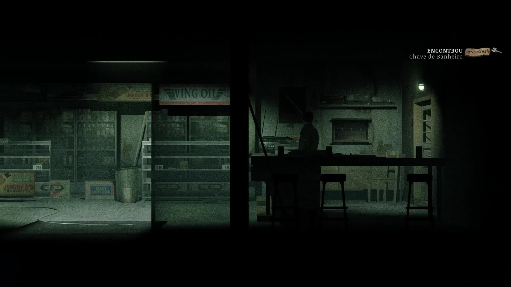
A chave do banheiro é recolhida na área do balcão da loja do Wing Oil.
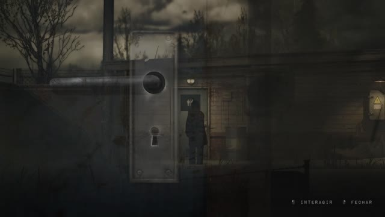
A porta externa com os símbolos de banheiro fica à esquerda da loja. Use a chave na fechadura.
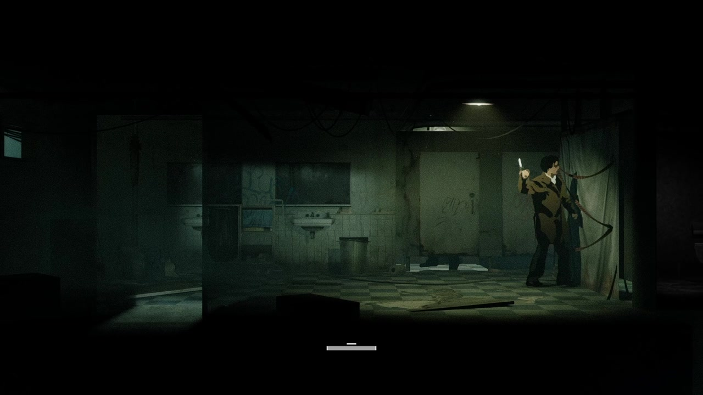
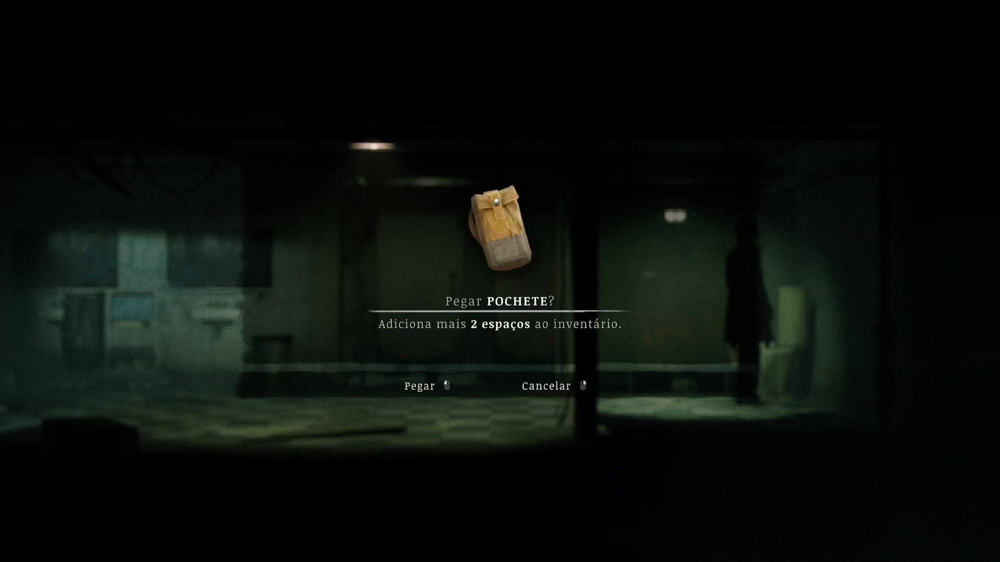
Depois de cortar o tecido, procure a pochete sobre o vaso à direita. A tela confirma os dois espaços extras.
Cofre, evidências e projetor
O cofre da xerife, a sala de evidências e o teclado do interrogatório são três etapas da mesma rota. Resolva o cofre primeiro para conseguir a ferramenta que libera a pista do distintivo. Na delegacia, procure a chave do porão na sala da xerife e a chave da ala norte no depósito subterrâneo. Examine o manual do cofre e o livro que indica a sequência de temas.
| Tema | Número | Giro |
|---|---|---|
| Ossos | 15 | Direita |
| Espíritos | 7 | Esquerda |
| Corpo | 3 | Direita |
| Mal | 10 | Esquerda |
Abra o cofre e use a chave na sala de evidências para recolher o pé de cabra. No necrotério, retire o distintivo 0013 com a ferramenta. Pegue a placa de carro do lado de fora da ala norte e coloque-a no projetor. A mensagem manda inverter o distintivo: 3100. Use esse código na sala de interrogatório, fale com o policial e toque a fita no aparelho da sala. Enfrente o policial e recolha o sino A no caminho que se abre depois da luta. O rifle do arsenal é opcional e a chave fica na cama da cela B.
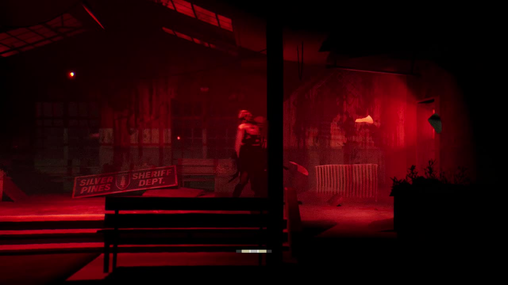
Confronto na delegacia. Abra espaço para se esquivar e cuide dos cães quando eles entrarem.
Referência de rota. Riverside e delegacia — Into Indie Games.
4. Union Apartments
| De onde saio | Referência | O que faço | Como sei que funcionou |
|---|---|---|---|
| Cinema | Salão escuro e abertura entre as cadeiras | Use a lanterna, atravesse o salão e saia pela porta do outro lado. | A rua do Union fica acessível. |
| Entrada do Union | Caixa de chaves e sala de serviço no exterior | Use a chave, desligue o interfone e volte para chamar 4B. | A porta de acesso aos apartamentos destranca. |
| Corredor dos apartamentos | Lavanderia no porão | Leve as quatro fichas à máquina. | A chave do terceiro andar sai da máquina. |
| Sala do supervisor | Painel de apartamentos | Digite 1C, 3A, 2A, 3C e leve o botão ao elevador. | O quarto andar fica selecionável. |
| Terraço | Chave ao lado da página do diário | Abra o 4B, use a banheira e complete a luta e o cenário alagado. | Você sai com o sino D e pode equipar o memento de natação. |
Objetivo: acessar o 4B, pegar o sino D e liberar a travessia até Church Hill.
Use a lanterna na área escura do cinema e atravesse até o lado dos apartamentos. Pegue a chave da sala de serviço na entrada do Union, desça até a sala e desligue a transmissão do interfone. Volte ao painel da entrada e chame 4B.
Separe quatro fichas da lavanderia: uma na sala do supervisor, uma no segundo andar, uma no depósito do porão e outra na própria lavanderia. Coloque todas na máquina e pegue a chave do terceiro andar. Use o pé de cabra no espelho do banheiro do 3C para alcançar o 3B e continuar a exploração. Os recortes do supervisor correspondem aos apartamentos 1C → 3A → 2A → 3C. Abra a fechadura nessa ordem, pegue o botão do quarto andar e instale-o no elevador.
Como circular entre os apartamentos. Depois de quebrar o espelho do 3C, atravesse para o 3B e saia no corredor do terceiro andar. Siga para o 3A e procure o cartão de aniversário. Do balcão quebrado além do 3A, desça para alcançar o 2A e a página da máquina de escrever. No 1C, o folheto da galeria identifica o artista. Essas pistas ligam os moradores dos recortes às quatro portas. Suba até o terraço para encontrar a chave do 4B. Salve, entre no apartamento e interaja com a banheira. Na luta, mantenha-se em movimento quando os espinhos saírem do chão e ataque quando a criatura aparecer. Depois, pegue o Sea Polished Glass Shard no cenário alagado. Equipe-o para nadar mais longe. Leve o pássaro ferido ao buraco marcado por Hunger e recolha o sino D.
Opcional. Combine álcool do alambique do 2B com o solvente seco do 2A. Limpe a parede do 1C para revelar 1525, que abre o depósito com gasolina no porão.
Referência de rota. Union Apartments — Into Indie Games.
5. Church Hill
| De onde saio | Referência | O que faço | Como sei que funcionou |
|---|---|---|---|
| Oficina de barcos | Água a oeste e escada junto à igreja | Equipe o memento de natação, atravesse e acione a ponte. | O retorno por terra fica aberto. |
| Salão paroquial | Chave na mesa à direita | Abra a floricultura e busque a chave da área familiar. | A porta superior da funerária passa a abrir. |
| Funerária | Espelho com nomes de flores e teclado inferior | Digite 752, envie o caixão 2 ao incinerador e recolha o cubo. | O cubo entra no inventário depois que o fogo apaga. |
| Rua do cemitério | Marreta, casas antigas e poço | Quebre a parede rachada para pegar a manivela e use-a no poço. | O balde traz o terceiro cubo. |
| Grade lateral da igreja | Quatro encaixes para símbolos | Complete triângulo, cruz, cruz, triângulo e siga pela torre. | Após a sequência na igreja, a porta à esquerda dá acesso ao sino B. |
Objetivo: obter a marreta, a manivela e o sino B.
Com o memento de natação equipado, atravesse pela água a oeste da oficina de barcos, abaixo do Silver Gazette. Suba pela escada junto à igreja e acione o painel da ponte levadiça para liberar o retorno por terra.
- Igreja. Recolha o primeiro cubo. No salão paroquial, pegue a chave da floricultura.
- Floricultura. Passe pelo balcão e rompa as tábuas para obter a chave da área familiar da funerária. Anote os preços: lírio 7, rosa 5, campânula 2.
- Funerária. A nota no espelho indica lírio, rosa e campânula. Digite 752 no acesso aos caixões. Identifique o caixão 2, de Jacob Foster. Use os carrinhos e o elevador para levá-lo à esteira da cremação. Depois que o fogo apagar, recolha o cubo dentro do incinerador. Pegue também a chave do cemitério.
- Cemitério. Recolha a marreta na rua superior. Quebre a parede rachada numa das casas antigas para conseguir a manivela. Use-a no poço do cemitério e recolha o último cubo.
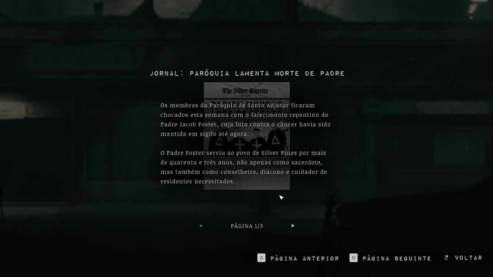
O jornal identifica Jacob Foster. Para a sequência de símbolos, consulte o colar no memorial da funerária. Como transportar o caixão. Posicione o carrinho junto ao caixão 2 e transfira-o para o carrinho. Na base do elevador, passe o caixão para a plataforma e acione o botão. Suba por fora, use o carrinho de cima para levar o caixão até a esteira e acione a cremação. Aguarde o fogo apagar antes de entrar. Instale os cubos na grade e reproduza o colar do memorial, da esquerda para a direita: triângulo → cruz → cruz → triângulo. Suba pela torre, avance pela sequência do confessionário e sobreviva às ondas de inimigos dentro da igreja. A porta à esquerda leva ao sino B.
Referência de rota. Church Hill — Into Indie Games.
6. Prefeitura e Loomis Park
| De onde saio | Referência | O que faço | Como sei que funcionou |
|---|---|---|---|
| Entrada de Loomis Park | Tábuas no portão | Use o pé de cabra e entre na prefeitura. | Você alcança o salão e as escadas da prefeitura. |
| Salão da prefeitura | Sala do telefone, porão e escola noturna | Junte pinça, molde e chave do escritório. Abra o escritório superior. | Argila e chave dos bueiros ficam disponíveis. |
| Coreto e misturador | Bueiro do parque e misturador amarelo | Busque a máscara chorosa e prepare o molde com a argila misturada. | O inventário mostra o molde preenchido. |
| Forno da prefeitura | Pinça e salão de reuniões | Retire a máscara deformada e vença o confronto. Coloque as três máscaras nas estátuas. | A mão da estátua do meio libera o sino F. |
Objetivo: pegar a chave dos bueiros e o sino F.
Abra o caminho de Loomis Park com o pé de cabra. Na prefeitura, recolha a pinça na sala do telefone, a chave do escritório no casaco do porão e o molde na sala do artista. A máscara sorridente está na área acessível pelo corredor da escola noturna. Abra o escritório superior e pegue a argila e a chave dos bueiros. Se quiser Rest, fale com a mulher na escola noturna.
Como separar as três máscaras
| Máscara | Onde procurar | O que levar |
|---|---|---|
| Sorridente | Sala acessível pelo corredor da escola noturna | Acesso ao andar superior |
| Chorosa | Galeria sob o bueiro perto do coreto | Chave dos bueiros |
| Deformada | Forno da prefeitura | Molde preenchido, argila misturada e pinça |
Abra o bueiro perto do coreto para buscar a máscara chorosa. Use a argila no misturador, combine a mistura com o molde e coloque-o no forno. Retire a máscara deformada com a pinça e enfrente a criatura no salão. Nas estátuas, coloque chorosa à esquerda, deformada no centro e sorridente à direita. Pegue o sino F.
Opcional. Use a manivela no relógio da prefeitura, ajuste para 10:07 e puxe o castiçal no corredor superior para abrir o compartimento do memento. O armário de operações usa 1893.
Referências de rota. Loomis Park — Into Indie Games, Prefeitura — GameSpew.
7. Esgotos e montanha
| De onde saio | Referência | O que faço | Como sei que funcionou |
|---|---|---|---|
| Clínica | Bueiro junto ao prédio e painel do cais | Pegue a engrenagem. Instale-a com a manivela e baixe as três engrenagens. | O nível da água cai e o cano passa a ser acessível. |
| Entrada dos esgotos | Cano elevado e trabalhador no fim da galeria | Pegue a chave, abra a grade e ligue A. | A sala de controle mostra A ativo. |
| Sala de controle | Corredor 1329 e parede rachada | Siga até C, anote 1467 no diagrama e use o código para chegar a B. | A, B e C aparecem acesos após ligar as válvulas. |
| Painel de pressão | Três rodas e comporta principal | Aumente as três pressões e atravesse a abertura. | O caminho libera o confronto e a coleta do sino E. |
| Estação inferior | Suporte de sinos e placa | Instale os sinos por letra e toque E, G, D, C, F, A, B. | A cabine chega à plataforma. |
| Estação superior | Banheiro, placa Trail e quadro externo | Use 0441 na saída e reúna dois fusíveis de 40 A. | O quadro liga a energia da trilha. |
Objetivo: obter o sino E e alimentar a rede elétrica da montanha.
Abra o bueiro perto da clínica e pegue a engrenagem pesada. No painel da comporta do cais, instale a engrenagem e a manivela, abaixe as três engrenagens e acione o mecanismo. Entre no sistema de esgotos, suba pelo cano liberado e pegue a chave do trabalhador para abrir a grade.
Ligue o controle A perto da grade. A partir da sala de controle, explore o corredor atrás da parede rachada para chegar ao C. O diagrama da tubulação dá 1467, código do acesso ao B. Salve antes de acioná-lo e enfrente o monstro. Volte à sala de controle, confirme as três luzes verdes e gire os controles de pressão até o máximo. Atravesse a comporta, siga os comandos do confronto e recolha o sino E.
Checklist antes de voltar à estação
| Sino | Onde pegar |
|---|---|
| A | Depois do confronto com Roberts na delegacia |
| B | Porta à esquerda na igreja após as ondas |
| D | Cenário do 4B, depois de alimentar a criatura no buraco |
| E | Além da comporta principal dos esgotos |
| F | Mão da estátua central no Loomis Park |
Se o painel dos esgotos ainda indicar uma luz apagada, volte à válvula da letra correspondente antes de mexer na pressão. A sequência de sinos abaixo é a ordem de tocar. Para pendurá-los, siga a letra de cada gancho.
Na estação, instale os cinco sinos nos ganchos correspondentes. Toque E → G → D → C → F → A → B e embarque. Na estação superior, a senha 0441 está na parede do banheiro. Siga as placas da trilha e recolha dois fusíveis de 40 A: um junto à antena caída e outro na caixa da construção escura. Instale os dois no quadro externo, ligue a energia e volte pelo túnel até o portão agora acessível. Suba pela trilha até Thelend.
Da caixa de fusíveis até Thelend
- Do quadro externo, volte à esquerda e suba pelo acesso marcado Trail. Procure a entrada do mesmo túnel que você usou para alcançar a construção do segundo fusível.
- Dentro do túnel, siga à esquerda até o portão. Abra-o, entre na passagem e, na sala seguinte, siga para a direita e suba as escadas. Se ainda estiver fechado, volte ao quadro e confirme os dois fusíveis instalados e o interruptor ligado.
- Na saída superior, retome as placas da trilha. Perto de Thelend, atravesse o trecho alagado até o bueiro baixo, passe agachado e desça a escada para baixar a ponte. Suba de volta e siga para a estação. O telefone tocando é a referência de chegada.
Referência de rota. Esgotos e Siah Kopa — Into Indie Games.
8. Thelend e porta vermelha
| De onde saio | Referência | O que faço | Como sei que funcionou |
|---|---|---|---|
| Entrada de Thelend | Sala do telefone e painel de áudio | Leia a seção AUDIO, reúna os cabos e conecte as três saídas. | A gravação dá as frases que identificam as fitas. |
| Sala de edição | Estante de fitas e compartimento trancado | Leia as contagens de mortes e digite 0002. | Você recebe a chave dos fundos. |
| Saída dos fundos | Pátio externo, escadas e janela baixa | Contorne o prédio e entre pela janela. | A chave do Stage 1 está na mesa do escritório. |
| Stage 1 | Projetor e lentes ciano, magenta e amarela | Instale as três e levante a ciano. | O cenário fica vermelho e surge o acesso à porta vermelha. |
| Área da porta vermelha | Telefone com disco ausente e símbolos na parede | Busque o disco e disque os cinco símbolos. | A segunda metade da chave cai no compartimento do telefone. |
| Árvore | Grade, TV do quarto vermelho e corredor de alta tensão | Busque as três estacas e use-as na árvore. | A terceira inicia a luta que precede o encontro com Eddie. |
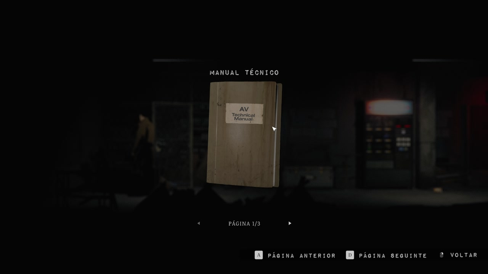
Manual técnico na sala com a máquina de vendas. Consulte a página dos cabos antes de voltar ao painel.
Objetivo: abrir o cenário vermelho e chegar à escolha de Eddie.
Abra o atalho da ponte e entre no prédio. Recolha três cabos: no painel de entrada, na área de prateleiras e na sala de edição. Leia o manual técnico na sala com telefone. No painel de áudio, ligue OUT 2 → IN 6, OUT 4 → IN 5 e OUT 5 → IN 2. Cruze as frases do áudio com os títulos das fitas na sala de edição. A contagem de mortes dá 0002. Abra o compartimento e pegue a chave dos fundos.
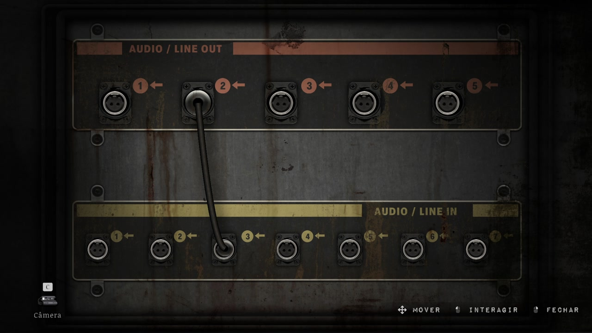
Painel de áudio de Thelend. A fileira superior é OUT e a inferior é IN. A captura mostra o painel durante a montagem, antes da solução completa.
Use a chave na porta Exit, no fim do corredor dos depósitos. Desça as escadas externas e siga pela grade à direita. Na área seguinte, siga pela passagem ao fundo, suba as escadas e desça pelas passagens do outro lado até ver a janela baixa à direita. Suba pela borda até a janela. Você deve cair no escritório com a chave na mesa. Destranque a porta interna para voltar ao saguão. Pegue a chave do Stage 1. Recolha a lente ciano na sala de filmes, a magenta no porão alagado e a amarela no alto da torre. A chave da torre está na área de depósito.
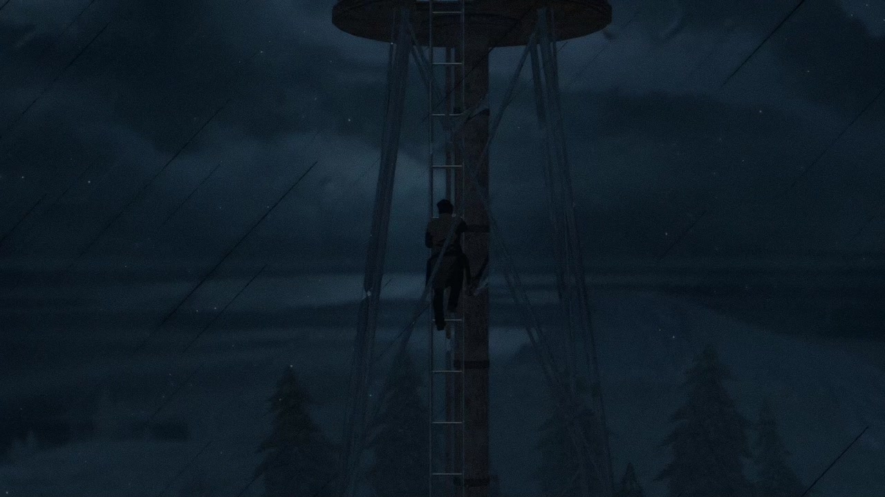
Escada externa da torre de antena. Depois de abrir a grade com a chave da torre, suba até a lente amarela.
Instale as três no projetor do Stage 1, levante a ciano e mantenha magenta e amarela ativas. Enfrente o Motorista e passe pela porta vermelha.
Se o áudio ou o projetor não funcionarem
| Painel | Confira |
|---|---|
| Áudio | Use a seção AUDIO do manual. Os números de saída e entrada são diferentes. |
| Caixa das fitas | Digite também os zeros iniciais. A combinação tem quatro posições: 0002. |
| Projetor | Encaixe as três lentes. Deixe magenta e amarela no feixe e tire a ciano do caminho. |
O telefone e as estacas
- Fotografe os cinco símbolos da parede. Pegue a chave enferrujada e a metade da chave nos ganchos. Use a enferrujada para abrir a grade. Além das passarelas, suba pela escada junto aos cartazes para buscar o alicate.
- Desça pela escada do vão para buscar o disco do telefone. Instale-o no aparelho e disque na ordem da parede: ômega, triângulo invertido, triângulo sobre cruz, círculo riscado, triângulo invertido com barra. Recolha a outra metade e combine as duas para obter a chave ensanguentada.
- Pegue uma estaca atrás da grade da chave ensanguentada. Para outra, procure a fita Love atrás da parede quebrável no túnel e toque-a na TV do quarto vermelho. A terceira fica no caminho de alta tensão, perto do carro destruído. Use o alicate nos dois fios da caixa para abrir essa rota.
- Use as três estacas na árvore. Salve antes da terceira, que inicia a luta. Depois da vitória, avance até a área alagada de Eddie. Preserve o salvamento anterior à conversa se quiser explorar outros finais.
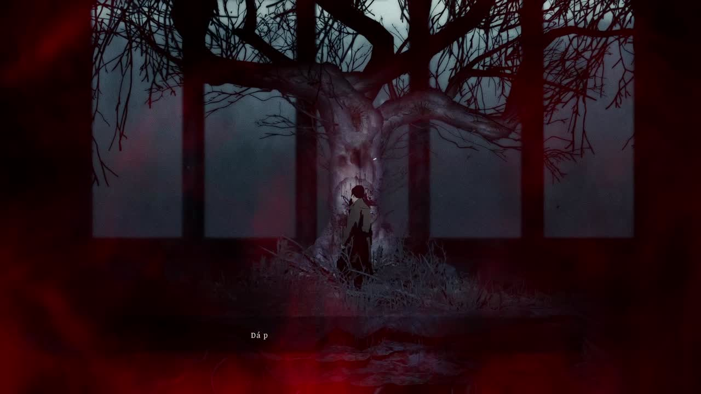
A árvore onde as três estacas devem ser usadas.
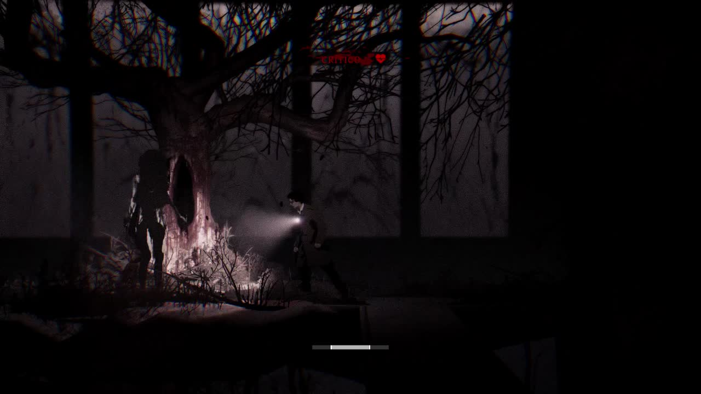
A criatura que aparece após a terceira estaca. Use o telefone para salvar antes de acionar a luta.
Referências de rota. Thelend e finais — Into Indie Games, Enigmas e painéis — Bonus Action.
9. Os três finais
| De onde saio | Referência | O que faço | Como sei que funcionou |
|---|---|---|---|
| Telefone antes de Eddie | Área alagada e escolha do diálogo | Salve e escolha matar Eddie para Leave ou poupar para seguir às outras rotas. | Leave leva ao Miner Diner. Poupar devolve você a West Road. |
| West Road após poupar Eddie | Anel na água e encaixes no palco do Rabbit Hole | Para Rest, reúna o anel de Alice e o anel da caixa de cinco estrelas. | Os dois anéis no palco abrem a sequência final. |
| West Road após poupar Eddie | Costa dos arredores e cabana do homem das mãos queimadas | Para Live, confira os 25 mementos, fale com ele e confirme a queima. | A confirmação na cabana inicia o final Live. |
Atenção ao botão. O nome do final Leave corresponde à escolha de matar Eddie. A opção Leave que aparece no diálogo significa sair e poupar Eddie, abrindo as rotas Rest e Live.
Prepare o salvamento da escolha
Guarde um salvamento no telefone antes de falar com Eddie. Se for buscar Rest, confira a caixa de anéis e as estrelas. Para Live, use a lista de mementos no fim do artigo. As duas rotas partem da decisão de poupar Eddie.
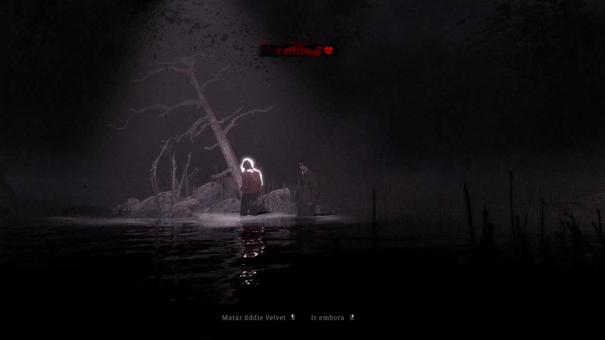
Área alagada do encontro com Eddie. Salve no telefone antes de chegar à escolha.
Leave
Escolha matar Eddie. Após a transição, atenda ao telefone fora do Miner Diner e use o carro para encerrar. Esse é o caminho mostrado na gameplay do Bora de Play.
Rest
Poupe Eddie. Pegue o anel de Alice na área alagada de West Road. O outro anel está na caixa de anéis do banheiro do Miner Diner, que abre com cinco estrelas:
| Estrela | Onde procurar |
|---|---|
| Rabbit Hole | Mesa do bar na visita ao local real. |
| Quarto 3 do motel | Reative a balsa com o fusível de 20 A do escritório do cais. Use a marreta para entrar no farol, suba para pegar a chave do quarto e abra o cofre com 6671. |
| Quiet Hour Café | Ao lado do homem ferido, depois de avançar pela sequência de Church Hill. |
| Buraco do escavador | Pegue a pá dentro do trailer quando ele estiver acessível e cave no fundo do buraco. |
| Mulher de capa amarela | Fale com ela na clínica e na escola noturna. Procure-a no banco perto da entrada de Thelend e avance o diálogo para recolher a estrela. |
Combine as estrelas com a caixa, retire o anel e coloque os dois no palco do Rabbit Hole. Salve antes de seguir pelo acesso que se abre. Na perseguição, avance quebrando as barreiras, ataque nos trechos sem saída e desvie dos destroços até concluir o confronto no diner.
Live
Poupe Eddie e reúna os 25 mementos. Use a lista de coleta durante a campanha, pois a rota inclui itens de áreas opcionais. Volte à costa dos arredores, converse com o homem das mãos queimadas e confirme a queima dos mementos na cabana. O guia de coleta nos links abaixo mostra onde estão os mementos e ajuda a conferir o que falta.
Referências. Rotas dos três finais — Gamer Social Club, Localização dos 25 mementos — Gamer Social Club, Mapa dos mementos — Gamer Guides.
↑ Voltar ao índice